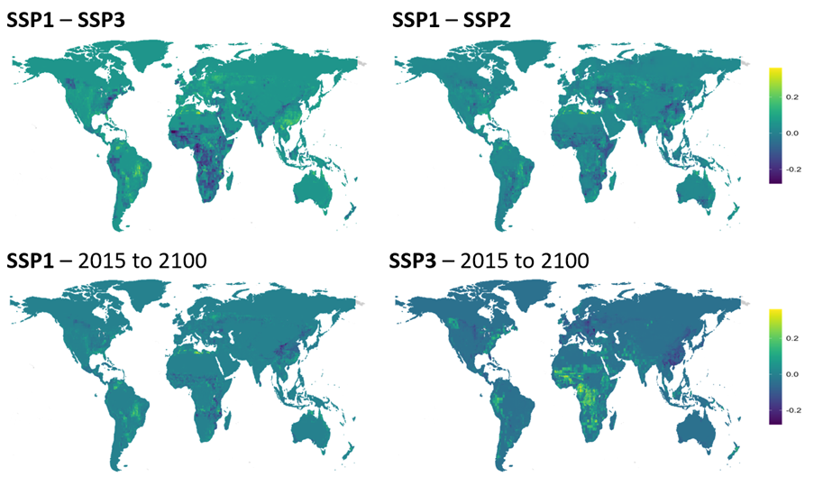

Modelling biodiversity and ecosystem services loss scenarios
Swiss Re Foundation, AXA Research Fund, and WWF as enabling partners, with EY as a service contributor to Swiss Re, are excited to announce the launch of the BES (Biodiversity and Ecosystem Services) Scenarios Modelling Initiative.Better understanding the impacts of biodiversity loss and ecosystem degradation is important for our society and economy. Healthy ecosystems underpin all the UN SDGs; and our economies and businesses remain dependent on the robustness of natural assets. The BES Scenarios Modelling Initiative aims to provide meaningful and quantified BES futures at a highly granular level and agglomerate data to provide globally applicable regional views.
Participants
Findings & Relevance
We establish response curves where land use has a robust relationship with BES service indicators, then indicate turning points where impacts of land use shift or accelerate. We found most relationships included these turning points, and that land use had consistent negative relationships with biodiversity metrics and regulating service supply, and positive relationships with most material services. However, only grazing, livestock, and access to nature had consistent robust relationships with land use. Land use may also have legacy effects on BES. We found that incorporating historical land use change very consistently improved model fit and parsimony, but only to a small degree. Finally, we selected sustainable, business as usual, regional rivalry and high growth future land use scenarios to input into our models, to compare the impacts on BES. However, given the robust models found, typically with positive relationships between land use and ecosystem services, higher land use in certain areas or scenarios led to higher ecosystem service values. We believe BES scenarios will contribute valuable input to policy makers, businesses, consumers and civil society on expected states of biodiversity and ecosystem services. They will support actions to improve biodiversity and ecosystem services.'The scenarios may shed further light about potential tipping points of ecosystem services – which is crucial information for livelihoods and businesses.'
Additional info:
https://www.swissre.com/institute/partnerships/modelling-biodiversity-ecosystem-boost-resilience.htmlFunding Organization